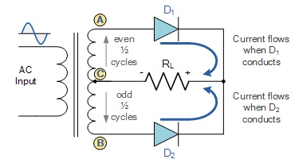
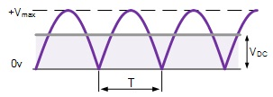
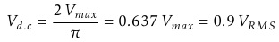
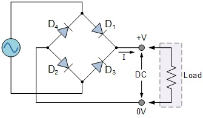
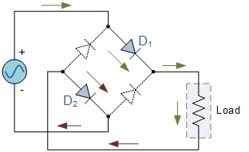
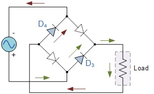

In a Full Wave Rectifier circuit two diodes are now used, one for each half of the cycle. A multiple winding transformer is used whose secondary winding is split equally into two halves with a common centre tapped connection, (C). This configuration results in each diode conducting in turn when its anode terminal is positive with respect to the transformer centre point C producing an output during both half-cycles, twice that for the half wave rectifier so it is 100% efficient as shown below.
|  |
|  |
The full wave rectifier circuit consists of two power diodes connected to a single load resistance (RL) with each diode taking it in turn to supply current to the load. When point A of the transformer is positive with respect to point C, diode D1 conducts in the forward direction as indicated by the arrows. When point B is positive (in the negative half of the cycle) with respect to point C, diode D2 conducts in the forward direction and the current flowing through resistor R is in the same direction for both half-cycles. As the output voltage across the resistor R is the phasor sum of the two waveforms combined, this type of full wave rectifier circuit is also known as a "bi-phase" circuit.
As the spaces between each half-wave developed by each diode is now being filled in by the other diode the average DC output voltage across the load resistor is now double that of the single half-wave rectifier circuit and is about 0.637 Vmax of the peak voltage, assuming no losses.
|  |
Where, VMAX is the maximum peak value in one half of the secondary winding and VRMS is the rms value.
The peak voltage of the output waveform is the same as before for the half-wave rectifier provided each half of the transformer windings have the same rms voltage value. To obtain a different DC voltage output different transformer ratios can be used. The main disadvantage of this type of full wave rectifier circuit is that a larger transformer for a given power output is required with two separate but identical secondary windings making thistype of full wave rectifying circuit costly compared to the "Full Wave Bridge Rectifier" circuit equivalent.
Another type of circuit that produces the same output waveform as the full wave rectifier circuit above is that of the Full Wave Bridge Rectifier. This type of single phase rectifier uses four individual rectifying diodes connected in a closed loop "bridge" configuration to produce the desired output. The main advantage of this bridge circuit is that it does not require a special centre tapped transformer, thereby reducing its size and cost. The single secondary winding is connected to one side of the diode bridge network and the load to the other side as shown below.
|  |
The four diodes labeled D1 to D4 are arranged in "series pairs" with only two diodes conducting current during each half cycle. During the positive half cycle of the supply, diodes D1 and D2 conduct in series while diodes D3 and D4 are reverse biased and the current flows through the load as shown below.
|  |
|  |